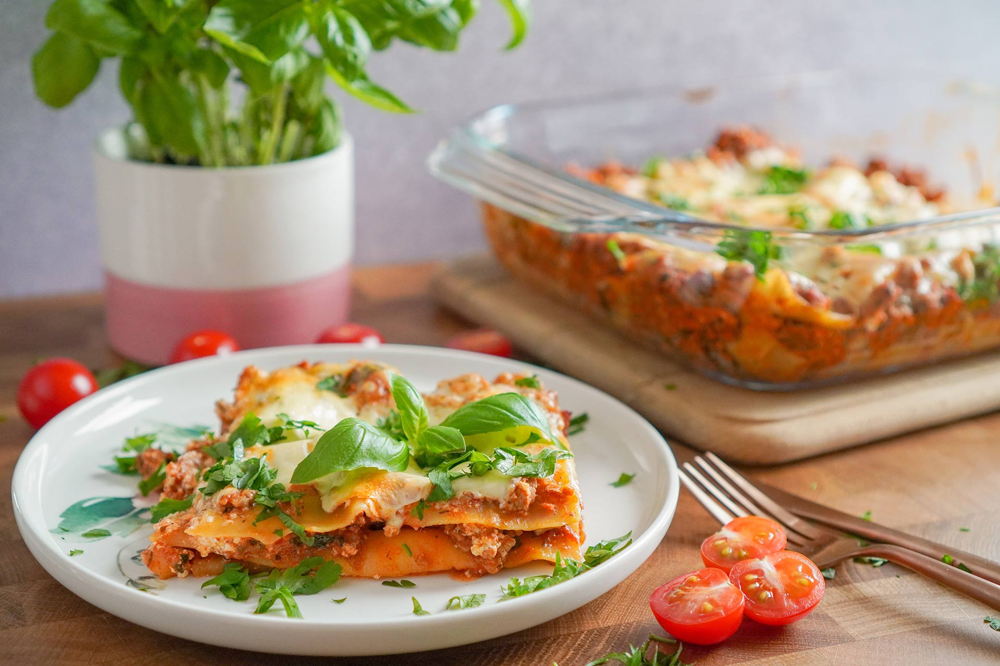

Other recepies
Difficulty: Moderate, but the longer you cook the meat sauce, the better the lasagna.
#lasagne #italian #delicious
This Italian dish is loved by everyone. This is based on the classic Italian recipes and adapted to find the best result.
It is important to make a good meat sauce and a good cheese sauce to make a Lasagna.
Ingredients
- Minced meat 1kg
- Carrots 4pcs
- Yellow onion 1pcs
- Garlic gloves 6
- Tomato pure 1can
- Chopped tomatoes 2cans
- Bull broth 2dl
- Red wine vinegar 1tbsp
- Sugar 2tsp
- Oil for frying
- Salt and pepper
Instructions
- Cut up onions, carrots, celery sticks and garlic and place in the pan.
Cook until soft. Add tomato puree and sugar.
Fry a little before adding chopped tomatoes and beef broth.
- Fry the minced meat little by little in a hot pan.
When you have finished the minced meat, pour over together with the tomato sauce and let the sauce simmer for a minimum of 1 hour.
- Now it's time to put the lasagna together.
Start with a little cheese sauce at the bottom and place pasta plates over this.
Add a thin layer of meat sauce, a new layer of cheese sauce and then pasta plates.
- Finish by sprinkling a little more grated cheese and fresh mozzarella.
Finish with a few good drops of olive oil and a little salt and pepper.
Put the pan in a preheated oven at 200 degrees hot air. Let it cook for 25 minutes.
Serve with a fresh salad, a little extra parmesan and garlic baguettes.